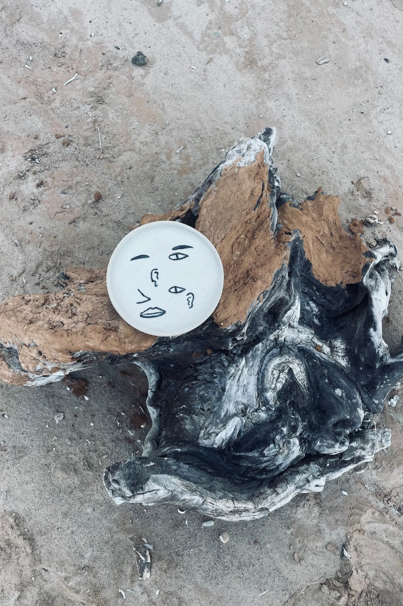
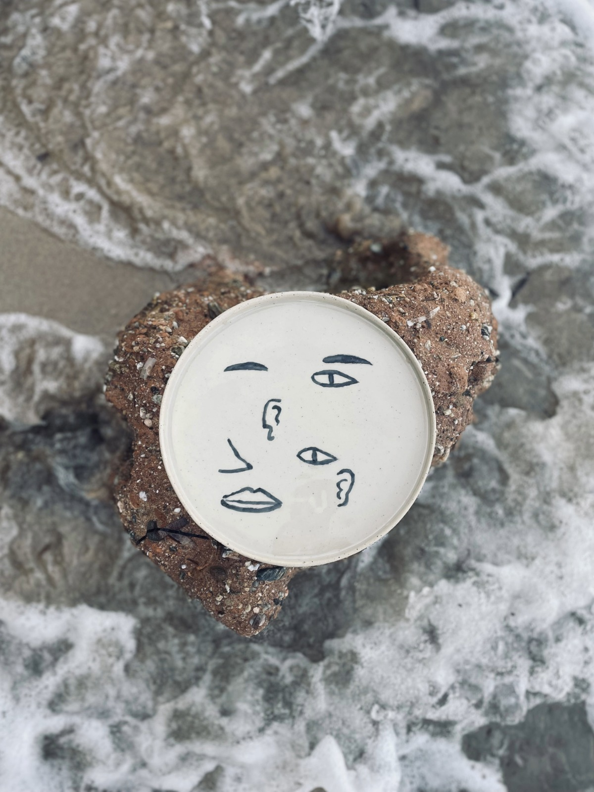

Integrating Sensory Science, Gastronomy, and Data-Driven Insights into Hospitality Contexts

Αυτό είναι προσωρινό placeholder section ώστε να δουλεύει σωστά το scroll behavior και η μετάβαση από το hero προς το υπόλοιπο site. Αργότερα εδώ θα μπουν τα πραγματικά sections.